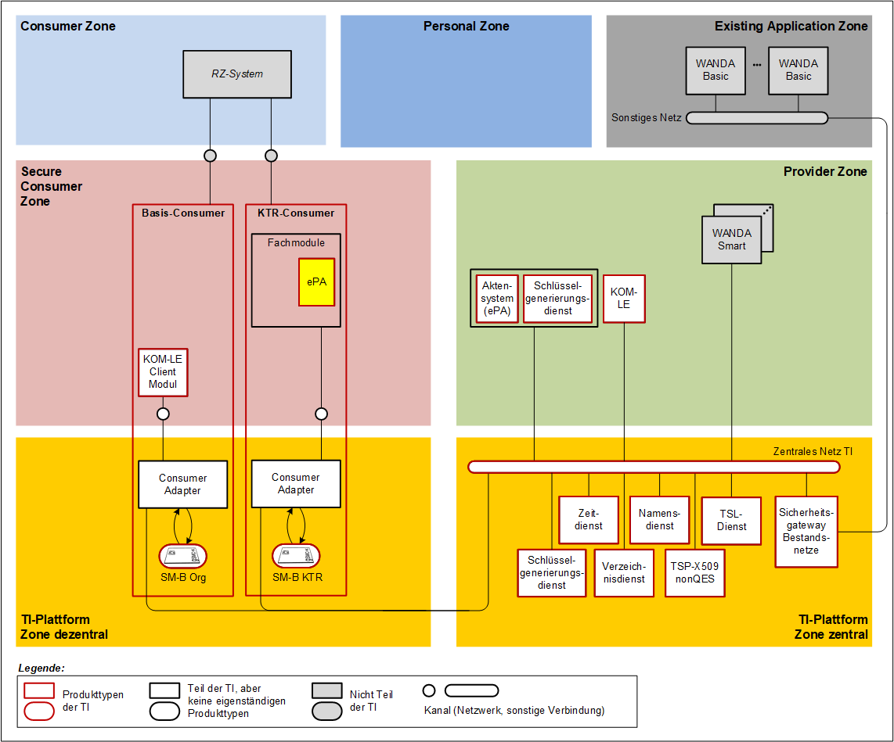
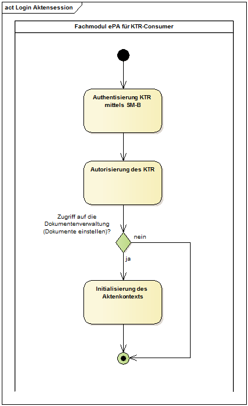
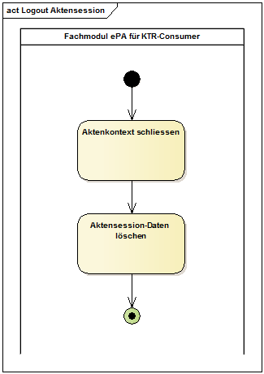

Elektronische Gesundheitskarte und Telematikinfrastruktur
Spezifikation
Fachmodul ePA im KTR-Consumer
| Version | 1.3.3 |
| Revision | 571426 |
| Stand | 11.03.2022 |
| Status | freigegeben |
| Klassifizierung | öffentlich |
| Referenzierung | gemSpec_FM_ePA_KTR_Consumer |
Änderungen zur Vorversion
Anpassungen des vorliegenden Dokumentes im Vergleich zur Vorversion können Sie der nachfolgenden Tabelle entnehmen.
Dokumentenhistorie
| Version | Stand | Kap./ Seite | Grund der Änderung, besondere Hinweise | Bearbeitung |
|---|---|---|---|---|
| 1.0.0 | 30.04.2019 | initiale Erstellung des Dokuments | gematik | |
| 1.1.0 | 28.06.19 | Einarbeitung von P19.1 | gematik | |
| 1.2.0 | 30.06.20 | freigegeben | gematik | |
| 1.3.0 | 12.10.20 | Einarbeitung der Scope-Themen von R4.0.1 | gematik | |
| 1.3.1 | 19.02.21 | Einarbeitung Änderungsliste P22.5 | gematik | |
| 1.3.2 | 11.02.22 | Einarbeitung Änderungsliste Consumer_Maintenance_21.4 | gematik | |
| 1.3.3 | 11.03.22 | 5.4 | Anpassung nach Absprache mit BfDI | gematik |
Die vorliegende Spezifikation definiert die Anforderungen zu Herstellung, Test und Betrieb der Komponente "Fachmodul ePA im KTR-Consumer" als Teil des Produkttyps KTR-Consumer.
Das Dokument richtet sich an Hersteller des Produktes des Produkttyps KTR-Consumer sowie an Hersteller und Anbieter der weiteren Produkttypen der Fachanwendung ePA.
Dieses Dokument enthält normative Festlegungen zur Telematikinfrastruktur des deutschen Gesundheitswesens. Der Gültigkeitszeitraum der vorliegenden Version und deren Anwendung in Zulassungs- oder Abnahmeverfahren wird durch die gematik GmbH in gesonderten Dokumenten (z.B. Dokumentenlandkarte oder Produkttypsteckbrief) festgelegt und bekannt gegeben.
Schutzrechts-/Patentrechtshinweis
Die nachfolgende Spezifikation ist von der gematik allein unter technischen Gesichtspunkten erstellt worden. Im Einzelfall kann nicht ausgeschlossen werden, dass die Implementierung der Spezifikation in technische Schutzrechte Dritter eingreift. Es ist allein Sache des Anbieters oder Herstellers, durch geeignete Maßnahmen dafür Sorge zu tragen, dass von ihm aufgrund der Spezifikation angebotene Produkte und/oder Leistungen nicht gegen Schutzrechte Dritter verstoßen und sich ggf. die erforderlichen Erlaubnisse/Lizenzen von den betroffenen Schutzrechtsinhabern einzuholen. Die gematik GmbH übernimmt insofern keinerlei Gewährleistungen.
Spezifiziert werden in dem Dokument die von der Komponente bereitgestellten (angebotenen) Schnittstellen. Die durch die Komponente benutzten Schnittstellen werden in der Spezifikation desjenigen Produkttypen beschrieben, der diese Schnittstelle bereitstellt. Auf die entsprechenden Dokumente wird referenziert (siehe auch "").
Die vollständige Anforderungslage für die Komponente ergibt sich aus weiteren Konzept- und Spezifikationsdokumenten. Diese sind in dem Produkttypsteckbrief des Produkttyps KTR-Consumer verzeichnet.
Anforderungen als Ausdruck normativer Festlegungen werden durch eine eindeutige ID in eckigen Klammern sowie die dem RFC 2119 [RFC2119] entsprechenden, in Großbuchstaben geschriebenen deutschen Schlüsselworte MUSS, DARF NICHT, SOLL, SOLL NICHT, KANN gekennzeichnet.
Sie werden im Dokument wie folgt dargestellt:
<AFO-ID> - <Titel der Afo>
Text / Beschreibung
[<=]
Dabei umfasst die Anforderung sämtliche zwischen Afo-ID und der Textmarke [<=] angeführten Inhalte.
Der KTR-Consumer ermöglicht es Kostenträgern, ihren Versicherten Dokumente in den ePA-Aktensystemen bereitzustellen.
Das Fachmodul ePA im KTR-Consumer (FM ePA KTR) ist eine Komponente innerhalb des KTR-Consumers, welche die dezentrale Fachlogik der Fachanwendung ePA kapselt. Das FM ePA KTR ist kein eigenständiger Produkttyp.

Abbildung 1: Systemüberblick Fachmodul ePA im KTR-Consumer
Im Systemkontext des FM ePA KTR interagieren verschiedene Akteure (aktive Komponenten) in unterschiedlichen Rollen mit dem FM ePA KTR.
Tabelle 1: TAB_FM_ePA_KTR_001 - Akteure und Rollen
| Akteur |
Rolle |
Beschreibung |
|---|---|---|
| Nutzer |
Kostenträger |
Primärer Anwender, Ausführen von fachlichen Anwendungsfällen mit Zugriff auf ein ePA-Aktensystem |
| Nutzer |
gematik Test |
Nutzer im Rahmen des Zulassungstest der gematik |
Der KTR-Consumer kann mandantenbasiert betrieben werden, d.h. in einem KTR-Consumer Produkt können mehrere Kostenträger als Nutzer auftreten.
Das FM ePA KTR als Komponente des KTR-Consumers nutzt Schnittstellen der folgenden Produkttypen der TI:
Der KTR-Consumer ist über einen SZZP an das zentrale Netz der TI angebunden. Die Dienste der zentralen TI, wie bspw. Namensdienst und TSP X.509 nonQES, werden über Dienste des KTR-Consumers genutzt, die dem Consumer Adapter gemäß [gemKPT_Arch_TIP#4.6 Rechenzentrums-Consumer] entsprechen.
Die von Kostenträgern in die Aktenkonten einzustellenden Dokumente werden über Backend-Systeme der Kostenträger bereitgestellt. Den Kostenträgern ist freigestellt eine individuelle Anbindung der bestehenden Backend-Systeme an das FM ePA KTR zu realisieren.
Um den Test der Schnittstellen im Rahmen der Zulassung durch die gematik zu ermöglichen, wird eine leichtgewichtige Schnittstelle zum Ausführen der Anwendungsfälle spezifiziert. Diese kann aber muss nicht durch die Backend-Systeme der Kostenträger genutzt werden.
Um eine datenschutzrechtlich zulässigen und sicheren Verarbeitung von schützenswerten Daten innerhalb des FM ePA KTR zu ermöglichen, muss das FM ePA KTR eine Vertrauenswürdige Ausführungsumgebung (VAU) realisieren. Siehe ""
Hinweis: Die VAU im FM ePA KTR unterscheidet sich in ihren Anforderungen von der VAU in der Komponente Dokumentenverwaltung des ePA-Aktensystems.
Eine weitere Untergliederung des FM ePA KTR in Komponenten ist nicht erforderlich.
Die Anforderungen, die sich aus den Themenfeldern Datenschutz und Sicherheit ergeben, beziehen sich auf die Vertrauenswürdigen Ausführungsumgebung (VAU) und sind in "" beschrieben.
Die Schnittstellen des ePA-Aktensystems und die Verarbeitungslogik des Fachmoduls basieren auf Transaktionen des IHE ITI Technical Frameworks [IHE ITI TF]. Die IHE ITI-Implementierungsstrategie ist in [gemSpec_DM_ePA] beschrieben.
Das Fachmodul nutzt die folgenden Integrationsprofile des IHE ITI TF:
Die folgende Tabelle bietet einen Überblick über die durch das FM ePA KTR umzusetzenden IHE ITI-Akteure und assoziierte Transaktionen. Siehe auch [gemSpec_DM_ePA#Abbildung Überblick über IHE ITI-Akteure und assoziierte Transaktionen].
Tabelle 2: TAB_FM_ePA_KTR_002 - IHE Akteure und Transaktionen
| Aktion |
Profile |
IHE-Akteur |
Transaktion |
Referenz |
|---|---|---|---|---|
| Einstellen von Dokumenten |
XDS.b |
Document Source |
Provide & Register Document Set-b [ITI-41] |
[IHE-ITI-TF2b]#3.41 |
| Authentisierung |
XUA |
X-Service User |
[IHE-ITI-TF] |
Die übergreifenden Einschränkungen von IHE ITI-Transaktionen sowie Festlegungen spezieller Umsetzungsvorgaben bzgl. einzelner Transaktionen sind in [gemSpec_DM_ePA] und [gemSpec_Dokumentenverwaltung] beschrieben.
Wenn in der IHE Interface-Beschreibung der Begriff „Patient“ verwendet wird, ist im Rahmen der vorliegenden Spezifikation darunter der Versicherte (Aktenkontoinhaber) zu verstehen.
In diesem Abschnitt werden die Anforderungen an das FM ePA KTR zur Umsetzung einer Vertrauenswürdigen Ausführungsumgebung (VAU) gestellt. Die VAU dient der datenschutzrechtlich zulässigen und sicheren Verarbeitung von schützenswerten Klartextdaten (Aktenschlüssel und Kontextschlüssel des Aktenkontos eines Versicherten) innerhalb des FM ePA KTR. Die VAU stellt dazu aktenindividuelle Verarbeitungskontexte (d.h. Instanzen der VAU) bereit, in denen die Verarbeitung sensibler Daten im Klartext erfolgen kann. Diese Verarbeitungskontexte sind entsprechend zu schützen.
A_17280
Das Fachmodul ePA im KTR-Consumer MUSS die Verarbeitung der Operationen der Schnittstellen I_Document_Management_Connect, I_Document_Management_Insurance und I_Authorization im Verarbeitungskontext einer Vertrauenswürdigen Ausführungsumgebung (VAU) umsetzen. <=
A_20652
Das Fachmodul ePA im KTR-Consumer MUSS ausschließlich eine SMC-KTR verwenden, deren Zertifikate die Admission oid_epa_ktr ausweisen. <=
A_20653
Das Fachmodul ePA im KTR-Consumer MUSS sicherstellen, dass eine SMC-KTR mit Zertifikaten, die die Admission oid_epa_ktr ausweisen, ausschließlich durch das Fachmodul ePA im KTR-Consumer verwendet wird. <=
Die Gesamtheit aus der für eine Klartextverarbeitung erforderlichen Software, dem für eine Klartextverarbeitung genutzten physikalischen System sowie den für die Integrität einer Klartextverarbeitung erforderlichen organisatorischen und physischen Rahmenbedingungen bildet den Verarbeitungskontext der Vertrauenswürdigen Ausführungsumgebung.
Zur Vertrauenswürdigen Ausführungsumgebung gehören neben den Verarbeitungskontexten alle für ihre Erreichbarkeit und betriebliche Steuerung erforderlichen Komponenten.
Der Verarbeitungskontext grenzt sich von allen weiteren, im betrieblichen Kontext bei einem Anbieter KTR-Consumer vorhandenen Systemen und Prozessen dadurch ab, dass die sensiblen Klartextdaten von Komponenten innerhalb des Verarbeitungskontextes aus erreichbar sind oder sein können, während sie dies von außerhalb des Verarbeitungskontextes nicht sind. Sensible Daten verlassen den Verarbeitungskontext ausschließlich gemäß wohldefinierten (Zugriffs-)Regeln und in verschlüsselter Form.
Die schützenswerten sensiblen Daten sind der Akten- und Kontextschlüssel der Aktenkonten, für die der KTR zugriffsberechtigt ist.
A_17346
Der Verarbeitungskontext des Fachmoduls ePA im KTR-Consumer MUSS sämtliche physikalischen Systemkomponenten sowie sämtliche Softwarekomponenten umfassen, deren Sicherheitseigenschaften sich auf den Schutz des Akten- und Kontextschlüssel eines Versicherten vor Zugriff durch Unbefugte bei ihrer Verarbeitung im Klartext auswirken können.
<=
A_17347
Der Verarbeitungskontext des Fachmoduls ePA im KTR-Consumer DARF den Akten- und Kontextschlüssel eines Versicherten NICHT persistent speichern, auch nicht verschlüsselt. <=
A_17348
Der Verarbeitungskontext des Fachmoduls ePA im KTR-Consumer MUSS sicherstellen, dass die Akten- und Kontextschlüssel der Versicherten die VAU nur verlassen (unabhängig davon, ob sie verschlüsselt oder unverschlüsselt sind), wenn sie ans ePA-Aktensystem übermittelt werden und die Übermittlung zum ePA-Aktensystem in einem sicheren Kanal erfolgt.
<=
Daher müssen die durch das FM ePA KTR genutzten Plattformleistungen, welche sensible Daten verarbeiten (PL_TUC_SYMM_ENCIPHER, PL_TUC_SYMM_DECIPHER), innerhalb der VAU realisiert werden.
Der Schutzbedarf der in der VAU verarbeiteten Klartextdaten erfordert den technischen Ausschluss von Zugriffen des Anbieters. Dies umfasst insbesondere Zugriffe durch Personen aus dem betrieblichen Umfeld des Anbieters.
A_17350
Die VAU des Fachmoduls ePA im KTR-Consumer MUSS die im Verarbeitungskontext ablaufenden Datenverarbeitungsprozesse von allen sonstigen Datenverarbeitungsprozessen des Anbieters trennen und damit gewährleisten, dass der Anbieter KTR-Consumer vom Zugriff auf die in der VAU verarbeiteten, schützenswerten Daten ausgeschlossen ist. <=
A_17351
Die VAU des Fachmoduls ePA im KTR-Consumer MUSS die Integrität der eingesetzten Software schützen und damit insbesondere Manipulationen an der Software durch den Anbieter KTR-Consumer ausschließen. <=
A_17352
Die VAU des Fachmoduls ePA im KTR-Consumer MUSS die Integrität der eingesetzten Hardware schützen und damit insbesondere Manipulationen an der Hardware durch den Anbieter KTR-Consumer ausschließen. <=
A_17353
Die VAU des Fachmoduls ePA im KTR-Consumer MUSS den Ausschluss von Manipulationen an der Hardware und der Software durch den Anbieter KTR-Consumer mit Mitteln umsetzen, deren dauerhafte und kontinuierliche Wirksamkeit gewährleistet werden kann. <=
A_17354
Die VAU des Fachmoduls ePA im KTR-Consumer MUSS mit technischen Mitteln sicherstellen, dass niemand, auch nicht der Anbieter KTR-Consumer, während der Verarbeitung personenbezogener medizinischer Daten Zugriff auf physische Schnittstellen der Systeme erlangen kann, auf denen eine VAU ausgeführt wird. <=
Die durch den Kostenträger einzustellenden Dokumente gelten im Sinne der ePA als personenbezogene medizinische Daten.
A_17355
Die VAU des Fachmoduls ePA im KTR-Consumer MUSS mit technischen Mitteln sicherstellen, dass ein physischer Zugang zu Hardware-Komponenten der Verarbeitungskontexte nur erfolgen kann, nachdem gewährleistet ist, dass aus ihnen keine Nutzdaten extrahiert werden können. <=
A_17356
Die VAU des Fachmoduls ePA im KTR-Consumer MUSS beim Beenden eines Verarbeitungskontextes sämtliche Daten dieses Verarbeitungskontextes sicher löschen. <=
Das FM ePA KTR soll Logdateien schreiben, die eine Analyse technischer Vorgänge erlauben. Diese Logdateien sind dafür vorgesehen, aufgetretene Fehler zu identifizieren, die Performance zu analysieren und interne Abläufe zu beobachten.
Es gelten die dem Produkttypen KTR-Consumer aus [gemSpec_OM] zugewiesenen Anforderungen.
A_22499
Das Fachmodul ePA KTR DARF medizinische und personenbezogene Daten NICHT loggen. <=
A_22519-01
Das Fachmodul ePA KTR MUSS Protokolldaten nach spätestens 30 Tagen löschen. <=
Eine Aktensession in einem FM ePA KTR bezeichnet die Sitzung im FM ePA KTR, in der fachliche Anwendungsfälle mit dem Aktenkonto eines Versicherten ausführt werden. Sollen bspw. Dokumente in die Aktenkonten verschiedener Versicherter eingestellt werden, dann wird zu jedem Aktenkonto eine separate Aktensession aufgebaut.
Ein Aktenkonto wird eindeutig durch eine Akten-ID (RecordIdentifier, siehe ) referenziert. Sie wird aus der Versicherten-ID und der homeCommunityID gebildet.
Eine Aktensession im FM ePA KTR beginnt mit dem Login und endet mit dem Logout. Während einer Aktensession können mehrere fachliche Anwendungsfälle ausgeführt werden (bspw. mehrere Dokumentensets einstellen). Das Logout erfolgt explizit nach Abarbeitung aller fachlichen Anwendungsfälle, mittels eines Time-outs nach Inaktivität oder nach einem Fehler beim Login.
A_17245
Das Fachmodul ePA im KTR-Consumer MUSS den Anwendungsfall "Login Aktensession" vor der Ausführung einer fachlichen Operation starten, wenn im Rahmen der internen Aktensession-Verwaltung kein Verarbeitungskontext mit gültigen Session-Daten vorhanden ist. <=
A_17246
Das Fachmodul ePA im KTR-Consumer MUSS zum Beenden der Aktensession den Anwendungsfall "Logout Aktensession" ausführen. <=
A_17247-01
Das Fachmodul ePA im KTR-Consumer MUSS spätestens nach 5 Minuten ohne Zugriff auf das Aktenkonto die Aktensession beenden. <=
A_17999
Das Fachmodul ePA im KTR-Consumer MUSS die Abarbeitung von Anwendungsfällen, welche verschiedenen Aktensessions zugeordnet werden, informationstechnisch trennen. <=
D.h. eine gegenseitige Beeinflussung von Aktensessions durch verborgene Kanäle muss verhindert werden. Direkte Informations- und Kontrollflüsse zwischen verschiedenen Aktensessions dürfen nicht auftreten.
Vor dem Zugriff auf eine Akte muss der passende Anbieter inklusive der URL des Aktendienstes und der Endpunkte über den Namensdienst der zentralen TI abgefragt werden.
Das ePA-Aktensystem wird durch die HomeCommunityID identifiziert, welche Bestandteil des RecordIdentifier (siehe ) ist.
A_17248
Das Fachmodul ePA im KTR-Consumer MUSS die zur Kommunikation mit den Komponenten
Das FM ePA KTR kann die Lokalisierungsinformationen unabhängig von der Nutzung seiner Schnittstellen abrufen, zwischenspeichern und wiederverwenden, d.h. die Abfrage muss nicht vor jedem Aufruf einer Schnittstelle erfolgen.
Im KTR-Consumer baut das FM ePA KTR eine TLS-Verbindung ohne Clientauthentisierung und mit Rollenprüfung zur Komponente Autorisierung auf.
A_17249
Das Fachmodul ePA im KTR-Consumer MUSS für die Kommunikation mit der Komponente Autorisierung eine TLS-Verbindung verwenden. <=
A_17281
Das Fachmodul ePA im KTR-Consumer MUSS den Aufbau der TLS-Verbindung zur Komponente Autorisierung gemäß der zugewiesenen Anforderungen aus und umsetzen.
Das Fachmodul ePA im KTR-Consumer MUSS für den Aufbau der TLS-Verbindung zur Komponente Autorisierung die lokalisierte Adresse verwenden und mittels PL_TUC_NET_NAME_RESOLUTION auflösen.
Das Fachmodul ePA im KTR-Consumer MUSS für den Aufbau der TLS-Verbindung zur Komponente Autorisierung das vom Zielsystem bereitgestellte Serverzertifikat C.FD.TLS-S auf Gültigkeit gemäß mit folgenden Parametern prüfen:
Tabelle 3 : TAB_FM_ePA_KTR_003 - TLS-Verbindung - Parameter Zertifikatsprüfung
| PolicyList |
oid_fd_tls_s |
| KeyUsage |
digitalSignature |
| ExtendedKeyUsage |
id-kp-serverAuth |
| OCSP-Graceperiod |
NULL |
| Offline-Modus |
Nein |
Hinweis: Der gemäß zu nutzende Prüfalgorithmus (TUC_PKI_018) liefert als einen der Rückgabewerte die im zu prüfenden Zertifikat enthaltenen Rollen-IDs.
A_17357
Das Fachmodul ePA im KTR-Consumer MUSS den verschlüsselten Benachrichtigungskanal zur Komponente Autorisierung aus der VAU des Fachmoduls ePA im KTR-Consumers initiieren, d.h., die TLS-Verbindung terminiert innerhalb der VAU.
<=Im KTR-Consumer baut das FM ePA KTR eine TLS-Verbindung ohne Clientauthentisierung und mit Rollenprüfung zur Komponente Dokumentenverwaltung auf.
A_17282-01
Das Fachmodul ePA im KTR-Consumer MUSS für die Kommunikation mit der Komponente Dokumentenverwaltung für jede Aktensession eine zu dieser Aktensession gehörende TLS-Session aufbauen bzw. eine für die Aktensession bestehende TLS-Session nutzen. <=
A_20626
Das Fachmodul ePA im KTR-Consumer MUSS für die Verbindung zwischen Fachmodul und Komponente ePA-Dokumentenverwaltung TLS Session Resumption mittels Session-ID gemäß RFC 5246 nutzen, um für den wiederholten Aufbau von TLS-Verbindungen die bereits ausgehandelten Session-Parameter zu nutzen. <=
A_17283
Das Fachmodul ePA im KTR-Consumer MUSS den Aufbau der TLS-Verbindung zur Komponente Dokumentenverwaltung gemäß der zugewiesenen Anforderungen aus und [gemSpec_PKI#TLS-Verbindungsaufbau] umsetzen.
Das Fachmodul ePA im KTR-Consumer MUSS für den Aufbau der TLS-Verbindung zur Komponente Dokumentenverwaltung die lokalisierte Adresse verwenden und mittels PL_TUC_NET_NAME_RESOLUTION auflösen.
Das Fachmodul ePA im KTR-Consumer MUSS für den Aufbau der TLS-Verbindung zur Komponente Dokumentenverwaltung das vom Zielsystem bereitgestellten Serverzertifikat C.FD.TLS-S auf Gültigkeit gemäß mit folgenden Parametern prüfen:
Tabelle 4: TAB_FM_ePA_KTR_004 - TLS-Verbindung - Parameter Zertifikatsprüfung
| PolicyList |
oid_fd_tls_s |
| KeyUsage |
digitalSignature |
| ExtendedKeyUsage |
id-kp-serverAuth |
| OCSP-Graceperiod |
NULL |
| Offline-Modus |
Nein |
A_17358
Das Fachmodul ePA im KTR-Consumer MUSS den verschlüsselten Benachrichtigungskanal zur Komponente Dokumentenverwaltung aus der VAU des Fachmoduls ePA im KTR-Consumers initiieren, d.h., die TLS-Verbindung terminiert innerhalb der VAU.
<=Aufbau eines sicheren Kanals auf HTTP-Anwendungsschicht zum Verarbeitungskontext der VAU
Die Kommunikation zum Aktenkonto in der Dokumentenverwaltung wird zusätzlich zu TLS über einen sicheren Kanal zwischen der VAU im FM ePA KTR und der VAU des Aktenkontos in der Dokumentenverwaltung gesichert. Die Dokumentenverwaltung bietet dem FM ePA KTR die folgenden Operationen ausschließlich über einen sicheren Kanal an:
Für Informationen zum Kommunikationsprotokoll zwischen FM ePA KTR und einer VAU in der Dokumentenverwaltung siehe und .
A_17385
Der Verarbeitungskontext der VAU des Fachmoduls ePA im KTR-Consumer MUSS mit dem Verarbeitungskontext der Komponente ePA-Dokumentenverwaltung des ePA-Aktensystems einen Sitzungsschlüssel gemäß und aushandeln und diesen für die Ver- und Entschlüsselung aller ausgetauschten Nachrichten verwenden.
<=
A_17284
Das Fachmodul ePA im KTR-Consumer MUSS beim Aufbau des sicheren Kanals zum Verarbeitungskontext der Komponente ePA-Dokumentenverwaltung des ePA-Aktensystems die AuthorizationAssertion aus den Session-Daten als Parameter gemäß [gemSpec_Dokumentenverwaltung#A_15592-*] übergeben. <=
A_17782-01
Das Fachmodul ePA im KTR-Consumer MUSS beim Aufbau des sicheren Kanals zum Verarbeitungskontext der Komponente ePA-Dokumentenverwaltung des ePA-Aktensystems eine Zertifikats- und Rollenprüfung für das vom Verarbeitungskontext der Komponente ePA-Dokumentenverwaltung empfangene Zertifikat C.FD.AUT prüfen.
Tabelle 5: TAB_FM_ePA_KTR_021 - VAU Dokumentenverwaltung - PL_TUC_PKI_VERIFY_CERTIFICATE
| Plattformbaustein PL_TUC_PKI_VERIFY_CERTIFICATE nutzen |
Eingangsdaten:
Wenn das Zertifikat in der Prüfung abgelehnt wurde, der Sperrstatus nicht ermittelt werden konnte oder die Rollenprüfung nicht erfolgreich war, dann ist das Zertifikat abzulehnen und der Verbindungsaufbau abzubrechen. |
A_17250
Das Fachmodul ePA im KTR-Consumer MUSS den im Rahmen des sicheren Verbindungsaufbaus mit der Verarbeitungskontext der Komponente ePA-Dokumentenverwaltung des ePA-Aktensystems ausgehandelten Sitzungsschlüssel verwenden, um den HTTP Body aller über den sicheren Kanal zu sendenden Requests an die Dokumentenverwaltung zu verschlüsseln und alle über den sicheren Kanal gesendeten Responses von der Dokumentenverwaltung zu entschlüsseln. <=
A_17285
Das Fachmodul ePA im KTR-Consumer MUSS, falls beim Aufbau der sicheren Verbindung zum Verarbeitungskontext der VAU in der Dokumentenverwaltung ein Fehler auftritt, die Operation abbrechen. <=
Mit dem Anwendungsfall „Login Aktensession“ wird die Aktensession zu dem Aktenkonto eines Versicherten im FM ePA KTR gestartet.
Für das Login werden die Zertifikate der Institutionskarte des Kostenträgers (SMC-KTR) verwendet. Nach erfolgreicher Authentisierung und Autorisierung wird das empfängerverschlüsselte Schlüsselmaterial heruntergeladen und das Öffnen des Aktenkontextes in der Komponente Dokumentenverwaltung für das referenzierte Aktenkonto durchgeführt.
A_17251
Das Fachmodul ePA im KTR-Consumer MUSS den Anwendungsfall „UC 1.6 - Login durch einen Kostenträger“ aus [gemSysL_Fachanwendung_ePA] gemäß TAB_FM_ePA_KTR_005 umsetzen.
Tabelle 6: TAB_FM_ePA_KTR_005 - Login Aktensession
| Name |
Login Aktensession |
| Auslöser |
|
| Vorbedingung |
Der Versicherte hat seine Einwilligung gegeben. Der RecordIdentifier des Versicherten ist bekannt. Die Zertifikate der SMC-KTR des zugehörigen Kostenträgers sind verfügbar. |
| Nachbedingung |
Für die Session liegen gültige Session-Daten im FM ePA KTR vor. |
| Standardablauf |
Aktivitäten im Standardablauf
|
| Varianten |
Im Fehlerfall wird der Anwendungsfall abgebrochen und der Anwendungsfall „Logout Aktensession“ gestartet. |

Abbildung 2: Login Aktensession
Authentisierung KTR mittels Zertifikaten der SMC-KTR
Die Authentisierung KTR mit den Zertifikaten der ausgewählten SMC-KTR erfolgt durch das FM ePA KTR. Hierzu erzeugt das FM ePA KTR ein SAML-Token gemäß, welches dem IHE-Profil "XUA" [IHE-ITI-TF] genügt und als AuthenticationAssertion bezeichnet wird. Das Token wird mit der Identität der für den KTR ausgewählten SMC-KTR signiert.
A_17252
Das Fachmodul ePA im KTR-Consumer MUSS für die Authentisierung im ePA-Aktensystem die Identitäten einer SMC-KTR des Kostenträgers benutzen, bei der der Inhaber des Aktenkontos, auf das zugegriffen werden soll, versichert ist. <=
A_17253
Das Fachmodul ePA im KTR-Consumer MUSS für die Authentisierung als Authentifizierungsbestätigung eine SAML2-Assertion gemäß dem IHE-Profil "XUA" [IHE-ITI-TF] und [gemSpec_TBAuth#TAB_TBAuth_03] erstellen und dabei folgende Vorgaben beachten:
A_17254
Das Fachmodul ePA im KTR-Consumer MUSS die für die Authentisierung als Authentifizierungsbestätigung erstellte SAML2-Assertion im Element AttributeStatement mit den Behauptungen gemäß [gemSpec_TBAuth#TAB_TBAuth_02_1] befüllen und dabei folgende Vorgaben beachten:
Die SAML2-Assertion gemäß A_17253 wird als AuthenticationAssertion in die Session-Daten übernommen.
A_17255
Das Fachmodul ePA im KTR-Consumer MUSS die AuthenticationAssertion zur Authentisierung einer KTR spätestens nach Ablauf ihrer Gültigkeitsdauer löschen. <=
Autorisierung des KTR
Die Komponente Autorisierung des lokalisierten ePA-Aktensystems prüft, ob im Rahmen der Aktensession der Zugriff auf die mit dem RecordIdentifier referenzierte Akte erlaubt ist. Dazu schickt das FM ePA KTR die im Rahmen der Authentisierung (s.o.) ausgestellte AuthenticationAssertion an die Komponente Autorisierung und erhält nach erfolgreicher Prüfung Akten- und Kontextschlüssel sowie eine Autorisierungsbestätigung (AuthorizationAssertion) zur Kommunikation mit der Dokumentenverwaltung ausgehändigt.
A_17286
Das Fachmodul ePA im KTR-Consumer MUSS im Anwendungsfall "Login Aktensession" das Schlüsselmaterial des Aktenkontos gemäß TAB_FM_ePA_KTR_006 laden.
Tabelle 7: TAB_FM_ePA_KTR_006 - Operation getAuthorizationKey
| I_Authorization::getAuthorizationKey Request erstellen |
Eingangsparameter:
|
| I_Authorization::getAuthorizationKey Response verarbeiten |
Rückgabedaten:
Liefert der Response einen Fehler oder beinhaltet der Response keinen AuthorizationKey oder keine AuthorizationAssertion, wird der Anwendungsfall abgebrochen. |
Der AuthorizationKey beinhaltet im Element phrs:AuthorizationKey/phrs:EncryptedKeyContainer ein Chiffrat mit dem verschlüsselten Akten- und Kontextschlüssels sowie AssociatedData.
Die Datenstruktur für EncryptedKeyContainer und die Klartextpräsentation für Akten- und Kontextschlüssel ist in beschrieben.
Die Klartextpräsentation von Akten- und Kontextschlüssel im AuthoritationKey ist doppelt symmetrisch verschlüsselt. Die symmetrischen Schlüssel zur Ver- und Entschlüsselung von Akten- und Kontextschlüssel werden über die Schlüsselableitungsfunktion der Schlüsselgenerierungsdienste Typ 1 und 2 ermittelt. Die Funktionsweise der Schlüsselgenerierung wird in [gemSpec_SGD_ePA] beschrieben.
A_17838
Das Fachmodul ePA im KTR-Consumer MUSS zur Schlüsselableitung den in festgelegten Ablauf in der Rolle Client durchführen. <=
A_18185
Das Fachmodul ePA im KTR-Consumer MUSS X.509-Zertifikate eines Schlüsselgenerierungsdienstes der TI gemäß PL_TUC_PKI_VERIFY_CERTIFICATE prüfen.
Tabelle 8: TAB_FM_ePA_KTR_026 - Schlüsselgenerierungsdienst - PL_TUC_PKI_VERIFY_CERTIFICATE
| PL_TUC_PKI_VERIFY_CERTIFICATE nutzen | Eingangsdaten:
|
Zur Optimierung der Performance muss das FM ePA KTR die Schlüsselableitung für SGD 1 (Basisablauf Schritt 1) und SGD 2 (Basisablauf Schritt 3) und das Erzeugen eines ephemeren ECDH-Schlüsselpaares (Basisablauf Schritt 5) parallel ausführen. Der Request an SGD 1 und SGD 2 in Basisablauf Schritt 7 können ebenfalls parallelisiert werden. Für die bei einer Schlüsselableitung für eine Entschlüsselung im Request für KeyDerivation zu übermittelnden Informationen ist keine Unterscheidung des Anwendungsfalls in SGD notwendig. Es werden sowohl für SGD 1 als auch SGD 2 die Informationen aus dem Element phrs:AuthorizationKey/phrs:EncryptedKeyContainer/phrs:AssiciatedData verwendet: KeyDerivation <Teilstring aus AssociatedData für den entsprechenden SGD>
A_17996
Das Fachmodul ePA im KTR-Consumer MUSS die Schlüsselableitung mit SGD 1 und SGD 2 sowie das Erzeugen des ephemeren ECDH-Schlüsselpaares parallelisieren. <=
Als Ergebnis bei einer erfolgreichen Schlüsselableitung zum Entschlüsseln erhält das FM ePA KTR von jedem der beiden SGD eine Antwortnachricht für KeyDerivation im Format: "OK-KeyDerivation "+Key+" "+s.
Key ist der für die Entschlüsselung zu verwendende symmetrische Schlüssel für den entsprechenden SGD.
Für das Entschlüsseln gelten die Vorgaben aus sowie .
A_17997
Das Fachmodul ePA im KTR-Consumer MUSS beim Entschlüsseln des Akten- und Kontextschlüssel die bei der Schlüsselableitung mit SGD 1 und SGD 2 erhaltenen symmetrischen Schlüssel gemäß [gemSpec_SGD_ePA] und [gemSpec_Krypt] nutzen.
Tabelle 9: TAB_FM_ePA_KTR_021 - Akten- und Kontextschlüssel entschlüsseln
| Plattformbaustein PL_TUC_SYMM_DECIPHER nutzen |
Eingangsdaten:
|
| Plattformbaustein PL_TUC_SYMM_DECIPHER nutzen |
Eingangsdaten:
|
Die AuthorizationAssertion, der Aktenschlüssel und Kontextschlüssel werden in die Session-Daten übernommen.
Öffnen des Aktenkontextes
Für den Verbindungsaufbau zur Dokumentenverwaltung und zur VAU Dokumentenverwaltung siehe "".
A_17318
Das Fachmodul ePA im KTR-Consumer MUSS im Anwendungsfall "Login Aktensession" das Übersenden des Kontextschlüssels gemäß TAB_FM_ePA_KTR_008 umsetzen.
Tabelle 10: TAB_FM_ePA_KTR_008 - Operation OpenContext
| Vorbedingung |
AuthorizationAssertion und entschlüsselter Kontextschlüssel liegen in Session-Daten vor. |
| I_Document_Management_Connect::OpenContext Request erstellen |
Eingangsdaten:
|
| I_Document_Management_Connect::OpenContext Response verarbeiten |
Rückgabedaten:
|
Der Anwendungsfall „Logout Aktensession“ beendet eine Session zu einem Aktenkonto.
A_17256
Das Fachmodul ePA im KTR-Consumer MUSS den Anwendungsfall "UC 1.3 - Logout durch einen Nutzer" aus [gemSysL_Fachanwendung_ePA] gemäß TAB_FM_ePA_KTR_009 umsetzen.
Tabelle 11 : TAB_FM_ePA_KTR_009 - Logout Aktensession
| Name |
Logout Aktensession |
| Auslöser |
|
| Vorbedingung |
Es besteht eine Aktensession. |
| Nachbedingung |
Die Session-Daten sind gelöscht. |
| Standardablauf |
Aktivitäten im Standardablauf
|

Abbildung 3: Logout Aktensession
A_17257
Das Fachmodul ePA im KTR-Consumer MUSS im Anwendungsfall „Logout Aktensession“, wenn ein sicherer Kanal zur Dokumentenverwaltung aufgebaut und der Aktenkontext erfolgreich geöffnet wurde, die Aktivität „Aktenkontext schliessen“ gemäß TAB_FM_ePA_KTR_010 umsetzen.
Tabelle 12: TAB_FM_ePA_KTR_010 – Logout - Aktenkontext schliessen
| Vorbedingung |
AuthorizationAssertion in Session-Daten |
| I_Document_Management_Connect::CloseContext Request erstellen |
|
| I_Document_Management_Connect::CloseContext Response verarbeiten |
HTTP OK oder gematik-Fehlermeldung |
A_17258
Das Fachmodul ePA im KTR-Consumer MUSS zum Abschluss des Anwendungsfall „Logout Aktensession“ alle Session-Daten aus dem lokalen Speicher löschen. <=
Die Session-Daten sind in "" beschrieben.
Mit diesem Anwendungsfall können Dokumente in das Aktenkonto eines Versicherten geladen werden.
Das ePA-Aktensystem unterstützt nur Dokumente mit bestimmten MIME Types. Die initial zulässigen Typen sind in [gemSpec_DM_ePA#A_14760-*]
beschrieben. Die Dokumentenverwaltung prüft den Dateitypen anhand der Metadaten beim Hochladen der Dokumente und antwortet mit einem Fehler, wenn der Dateityp nicht unterstützt wird.
Das ePA-Aktensystem lehnt beim Einstellen von Dokumenten Requests mit dem Fehler MaxDocSizeExceeded ab, wenn die Größe eines Einzeldokumentes 25 MB überschreitet.
Das ePA-Aktensystem lehnt beim Einstellen von Dokumenten Requests mit dem Fehler MaxPkgSizeExceeded ab, wenn die Summe der Größe der Dokumente in einem Submission Set 250 MB überschreitet. (siehe ) Das FM ePA KTR kann das Einstellen der Dokumente über mehre Transaktionen verteilen, um die Größenbeschränkung beim Submission Set zu umgehen.
A_17259
Das Fachmodul ePA im KTR-Consumer MUSS den Anwendungsfall "UC 4.11 - Dokumente durch einen Kostenträger einstellen" aus [gemSysL_Fachanwendung_ePA] gemäß TAB_FM_ePA_KTR_011 umsetzen.
Tabelle 13 : TAB_FM_ePA_KTR_011 - Dokumente einstellen
| Name | Dokumente einstellen |
| Auslöser |
|
| Vorbedingung | Es besteht eine Aktensession mit gültigen Session-Daten. Die hochzuladenden Dokumente sind im lokal eingebundenen Speicher verfügbar. |
| Nachbedingung | Die Dokumente sind im ePA Aktenkonto für alle Berechtigten verfügbar. |
| Standardablauf | Aktivitäten im Standardablauf
|
Abbildung 4: Dokumente einstellen
A_17261-03
Das Fachmodul ePA im KTR-Consumer MUSS im Anwendungsfall „Dokumente einstellen“ für jedes einzustellende Dokument Metadaten bereitstellen. Für die XDS-Metadaten von Dokumenten gelten die Nutzungsvorgaben aus [gemSpec_DM_ePA#A_14760-*] .
Für das Element DocumentEntry wird confidentialityCode auf den Wert "N" (für "normal") gesetzt.
Für die Elemente Document Entry und Submission Set wird das Attribut authorRole mit "105" belegt.
Für die Elemente Document Entry und Submission Set wird das Attribut authorInstitution mit Werten aus dem zur Authentisierung genutzten Zertifikat belegt.
<=
A_17323
Das Fachmodul ePA im KTR-Consumer MUSS sicherstellen, dass Dokumente, welche in das ePA-Aktensystem eingestellt werden, verschlüsselt sind. <=
Zum Verschlüsseln des Dokuments wird dieses mit einem Dokumentenschlüssel symmetrisch verschlüsselt. Der Dokumentenschlüssel wird dann symmetrisch mit dem Aktenschlüssel verschlüsselt. Für Vorgaben zum Verschlüsseln eines Dokuments für das ePA-Aktensystem siehe .
A_17262
Das Fachmodul ePA im KTR-Consumer MUSS im Anwendungsfall „Dokumente einstellen“ für jedes zu übermittelnde Dokument die Aktivität "Dokument verschlüsseln" gemäß TAB_FM_ePA_KTR_012 umsetzen.
Tabelle 14: TAB_FM_ePA_KTR_012 - Dokumente einstellen - Dokument verschlüsseln
| Plattformbaustein PL_TUC_SYMM_ENCIPHER für Dokument nutzen |
Dokument mit PL_TUC_SYMM_ENCIPHER verschlüsseln Eingangsdaten:
|
| Plattformbaustein PL_TUC_SYMM_ENCIPHER für Dokumentenschlüssel nutzen |
Dokumentenschlüssel mit PL_TUC_SYMM_ENCIPHER verschlüsseln Eingangsdaten:
|
Die Dokumentenschlüssel dürfen nicht persistent gespeichert werden und müssen nach ihrer Verwendung gelöscht werden.
A_17263
Das Fachmodul ePA im KTR-Consumer MUSS im Anwendungsfall „Dokumente einstellen“ in der Aktivität "Dokument verschlüsseln" erstellte Dokumentenschlüssel nach dem Ende der Aktivität löschen. <=
Auf Basis der verschlüsselten Dokumente und der Metadaten wird eine Provide And Register Document Set-b Message für die einzustellende Dokumente erstellt.
A_17264
Das Fachmodul ePA im KTR-Consumer MUSS im Anwendungsfall "Dokumente einstellen" das Hochladen der Dokumente gemäß TAB_FM_ePA_KTR_013 umsetzen.
Tabelle 15: TAB_FM_ePA_KTR_013 - Dokumente einstellen - Dokumentenset in Dokumentenverwaltung hochladen
| I_Document_Management_Insurance:: ProvideAndRegisterDocumentSet-b Request erstellen |
Eingangsparameter:
|
| I_Document_Management_Insurance:: ProvideAndRegisterDocumentSet-b Response verarbeiten |
Rückgabedaten:
|
A_17265
Das Fachmodul ePA im KTR-Consumer MUSS für die Nutzung der Operation I_Document_Management_Insurance::ProvideAndRegisterDocumentSet-b gemäß der in [IHE-ITI-TF] definierten IHE XDS-Transaktion [ITI-41] "Provide & Register Document Set-b" als Akteur "Document Source" umsetzen. <=
A_17266
Das Fachmodul ePA im KTR-Consumer MUSS bei der Umsetzung der IHE XDS-Transaktion [ITI-41] zur Übertragung von Dokumenten eine Kodierung mittels MTOM/XOP [MTOM] gemäß [IHE-ITI-TF2x#V.3.6.] verwenden. <=
Der Produkttyp KTR-Consumer realisiert die vom FM ePA KTR benötigten Leistungen der TI-Plattform, die in den fachlichen Anwendungsfällen der ePA genutzt werden. Die durch die TI-Plattform bereitgestellten Leistungen umfassen einen für die Fachanwendungen einheitlichen Zugriff auf Smartcards, Leistungen der PKI der Telematikinfrastruktur, Zugriff auf die zentralen Dienste der TI-Plattform etc., die in übergreifenden Spezifikationen der gematik festgelegt sind. Die Definition der Leistungen der TI-Plattform im KTR-Consumer befindet sich in [gemSpec_Systemprozesse_dezTI].
Die Plattformleistungen für kryptographische Operationen müssen innerhalb der VAU realisiert werden, da sensible Daten verarbeitet werden.
Das FM ePA KTR verwendet die in der Tabelle TAB_FM_ePA_KTR_019 dargestellten Plattformleistungen.
Tabelle 16 : TAB_FM_ePA_KTR_019 - Verwendete Plattformleistungen
| Kürzel |
Bezeichnung |
|---|---|
| PL_TUC_NET_NAME_RESOLUTION |
Auflösen von URI in IP-Adresse |
| PL_TUC_PKI_VERIFY_CERTIFICATE |
Prüfung eines Zertifikates der TI |
| PL_TUC_SIGN_HASH_nonQES |
mit TI-Identität nonQES signieren |
| PL_TUC_SYMM_DECIPHER |
Symmetrisch entschlüsseln |
| PL_TUC_SYMM_ENCIPHER |
Symmetrisch verschlüsseln |
Für die Möglichkeit eines Tests der Funktionalitäten durch die gematik im Rahmen des Zulassungstests wird eine technische Schnittstelle spezifiziert, über welche die Ausführung der Anwendungsfälle getriggert werden kann.
A_17955
Das Fachmodul ePA im KTR-Consumer MUSS Clientsystemen einen ePA-Dienst anbieten.
Tabelle 17 : TAB_FM_ePA_KTR_022 - ePA-Dienst
| Name |
EPAService |
|
|---|---|---|
| Version |
Siehe Anhang B |
|
| Namensraum |
Siehe Anhang B |
|
| Namensraum-Kürzel |
EPA für Schema und EPAW für WSDL |
|
| Operation |
Name |
Kurzbeschreibung |
| Logout |
triggert Anwendungsfall "Logout Aktenkonto" |
|
| PutDocuments |
triggert Anwendungsfall "Dokumente einstellen" |
|
| WSDL |
EPAService.wsdl |
|
| Schema |
EPAService.xsd |
|
A_17960
Das Fachmodul ePA im KTR-Consumer MUSS die Operation Logout gemäß folgender Signatur implementieren:
Tabelle 18 : TAB_FM_ePA_KTR_024 - Definition Logout
| Operation |
Logout |
||
|---|---|---|---|
| Beschreibung |
Mit dieser Operation wird der Anwendungsfall "Logout Aktensession" getriggert. |
||
| Formatvorgaben |
Die Definition der Ein- und Ausgabeparameter erfolgt in [EPAService.xsd]. |
||
| Eingangsparameter |
|||
| Name |
Beschreibung |
Typ |
opt. |
| insurantId |
10-stelliger, unveränderlicher Anteil der KVNR = VersichertenID |
String |
- |
| Fehlermeldungen |
|||
| Name |
Fehlertext |
Details |
|
| INTERNAL_ERROR |
Zufallszahl |
Interner Fehler in der Verarbeitungslogik. |
|
| Fehlermeldungen des ePA-Aktensystems werden an das Clientsystem weitergeleitet. |
|||
Die folgenden Anforderungen beschreiben die Umsetzung der Operation Logout.
A_17961
Das Fachmodul ePA im KTR-Consumer MUSS in der Operation Logout den Anwendungsfall "Logout Aktensession" für die der VersichertenID zugeordneten Aktensession durchführen. <=
A_17962
Das Fachmodul ePA im KTR-Consumer MUSS die Operation PutDocuments gemäß folgender Signatur implementieren:
Tabelle 19 : TAB_FM_ePA_KTR_025 - Definition PutDocuments
| Operation |
PutDocuments |
||
|---|---|---|---|
| Beschreibung |
Mit dieser Operation wird der Anwendungsfall "Dokumente einstellen" getriggert. |
||
| Formatvorgaben |
Die Definition der Ein- und Ausgabeparameter erfolgt in [EPAService.xsd]. |
||
| Eingangsparameter |
|||
| Name |
Beschreibung |
Typ |
opt. |
| insurantId |
10-stelliger, unveränderlicher Anteil der KVNR = VersichertenID |
String |
nein |
| HomeCommunityId |
HomeCommunityId des Aktensystems |
String |
nein |
| Kostentraegerkennung |
Institutionskennzeichen des Kostenträgers |
Integer |
nein |
| SubmissionSet |
|||
| title |
Titel des Submission Sets |
String |
ja |
| contentTypeCode |
Klinische Aktivität, die zum Einstellen des Submission Set geführt hat. |
ja |
|
| Document |
|||
| Data |
in das Aktenkonto einzustellendes Dokument |
base64 |
nein |
| formatCode |
Global eindeutiger Code für das Dokumentenformat. |
String |
nein |
| languageCode |
Sprache, in der das Dokument abgefasst ist. |
String |
nein |
| mimeType |
MIME-Type des Dokuments |
String |
nein |
| serviceStartTime |
Zeitpunkt, an dem das im Dokument dokumentierte (Behandlungs-)Ereignis begonnen wurde. |
String |
ja |
| serviceStopTime |
Zeitpunkt, an dem das im Dokument dokumentierte (Behandlungs-)Ereignis beendet wurde. |
String |
ja |
| title |
Titel des Dokumentes |
String |
ja |
| typeCode |
Art des Dokuments |
String |
nein |
| Fehlermeldungen |
|||
| Name |
Fehlertext |
Details |
|
| TECHNICAL_ERROR |
Interner Fehler in der Verarbeitungslogik. |
||
| SYNTAX_ERROR |
Fehlerhafte Aufrufparameter |
Es wurde ein fehlerhafter Aufrufparameter übergeben. |
|
| Fehlermeldungen des ePA-Aktensystems werden an das Clientsystem weitergeleitet. |
|||
A_17963
Das Fachmodul ePA im KTR-Consumer MUSS in der Operation PutDocuments den Anwendungsfall "Dokumente einstellen" für die der VersichertenID zugeordneten Aktensession durchführen. <=
A_17958
Das Fachmodul ePA im KTR-Consumer MUSS in der Operation PutDocuments den RecordIdentifier mit insurantID und HomeCommunityID bilden. <=
A_17959
Das Fachmodul ePA im KTR-Consumer MUSS in der Operation PutDocuments die für die Aktensession zu verwendende SMC-KTR auf Basis der Kostenträgerkennung auswählen. <=
Die VersichertenID dient der Identifikation der Aktensession.
A_17970
Das Fachmodul ePA im KTR-Consumer MUSS in der Operation PutDocuments die Eingangsparameter zum SubmissionSet (title, contentTypeCode) für die SubmissionSet Metadaten verwenden. <=
A_17971
Das Fachmodul ePA im KTR-Consumer MUSS in der Operation PutDocuments zu jedem Document den Eingangsparameter Data als in das Aktenkonto einzustellende Dokument verwenden. <=
A_17972
Das Fachmodul ePA im KTR-Consumer MUSS in der Operation PutDocuments die Eingangsparameter zu jedem Document (formatCode, languageCode, mimeType, serviceStartTime, serviceStopTime, title, typeCode) für die Documet Entry Metadaten verwenden. <=
A_20554
Das Fachmodul ePA im KTR-Consumer MUSS die Metadaten, die es als Eingangsparameter der Operation PutDocuments zu jedem Document erhalten hat, konform zu den Vorgaben in [gemSpec_DM_ePA] und [ITI-41] (in [IHE-ITI-TF2b]) als Eingangsparameter des Anwendungsfalles "Dokument einstellen" setzen. <=
Alle nicht durch das Interface übergebenen Metadaten werden durch das FM ePA KTR gesetzt. Optionale Parameter können, wenn sie nicht durch den Operationaufruf mit Werten belegt werden, beliebig gemäß den Richtlinien befüllt werden.
Session-Daten
Tabelle 20 : TAB_FM_ePA_KTR_020 - Session-Daten
| Datenfeld |
Herkunft |
Beschreibung |
|---|---|---|
| Telematik-ID |
Konfiguration |
Identität eines Kostenträgers in den Zertifikaten seiner SMC-KTR |
| Akten-ID (RecordIdentifier) |
Konfiguration |
Kennung der Akte des Versicherten beim jeweiligen Anbieter ePA-Aktensystem im Format von RecordIdentifier gemäß [gemSpec_DM_ePA#2.2] Die HomeCommunityID muss bekannt sein. |
| Authentisierungstoken (AuthenticationAssertion) |
Authentisierung mittels SMC-KTR |
Authentifizierungsbestätigung als Voraussetzung für die Autorisierung |
| Autorisierungstoken (AuthorizationAssertion) |
Komponente Autorisierung des ePA-Aktensystems (I_Authorization::getAuthorizationKey) |
Autorisierungsbestätigung |
| Aktenschlüssel (RecordKey) |
Komponente Autorisierung des ePA-Aktensystems (I_Authorization::getAuthorizationKey) |
entschlüsselter Aktenschlüssel |
| Kontextschlüssel (ContextKey) |
Komponente Autorisierung des ePA-Aktensystems (I_Authorization::getAuthorizationKey) |
entschlüsselter Kontextschlüssel |
Eine Darstellung der hardwareseitigen Verteilung des Produkttyps bzw. seiner Teilsysteme und der Einbettung in die physikalische Umgebung wird nicht benötigt.
| Kürzel |
Erläuterung |
|---|---|
| ePA |
Anwendung elektronische Patientenakte |
| FM ePA KTR |
Fachmodul ePA im KTR-Consumer |
| KTR |
Kostenträger |
| MTOM |
Message Transmission Optimization Mechanism |
| SGD |
Schlüsselgenerierungsdienst |
| SMC-KTR |
Sicherheitsmodul für eine Institution der Kostenträger |
| VAU |
Vertrauenswürdige Ausführungsumgebung |
| Begriff |
Erläuterung |
|---|---|
| Funktionsmerkmal |
Der Begriff beschreibt eine Funktion oder auch einzelne, eine logische Einheit bildende Teilfunktionen der TI im Rahmen der funktionalen Zerlegung des Systems. |
| Versicherten-ID |
Die Versicherten-ID ist der 10-stellige unveränderliche Teil der 30-stelligen Krankenversichertennummer (KVNR). |
Das Glossar wird als eigenständiges Dokument, vgl. [gemGlossar] zur Verfügung gestellt.
Die nachfolgende Tabelle enthält die Bezeichnung der in dem vorliegenden Dokument referenzierten Dokumente der gematik zur Telematikinfrastruktur. Der mit der vorliegenden Version korrelierende Entwicklungsstand dieser Konzepte und Spezifikationen wird pro Release in einer Dokumentenlandkarte definiert, Version und Stand der referenzierten Dokumente sind daher in der nachfolgenden Tabelle nicht aufgeführt. Deren zu diesem Dokument passende jeweils gültige Versionsnummer sind in der aktuellsten, von der gematik veröffentlichten Dokumentenlandkarte enthalten, in der die vorliegende Version aufgeführt wird.
| [Quelle] |
Herausgeber: Titel |
|---|---|
| [gemGlossar] |
gematik: Einführung der Gesundheitskarte - Glossar |
| [gemKPT_Arch_TIP] |
gematik: Konzept Architektur der TI-Plattform |
| [gemSpec_Aktensystem] |
gematik: Spezifikation ePA-Aktensystem |
| [gemSpec_Autorisierung] |
gematik: Spezifikation Autorisierung ePA |
| [gemSpec_DM_ePA] |
gematik: Datenmodell ePA |
| [gemSpec_Dokumentenverwaltung] |
gematik: Spezifikation Dokumentenverwaltung ePA |
| [gemSpec_SGD_ePA] |
gematik: Spezifikation Schlüsselgenerierungsdienst ePA |
| [gemSpec_Krypt] |
gematik: Übergreifende Spezifikation Verwendung kryptographischer Algorithmen in der Telematikinfrastruktur |
| [gemSpec_OID] |
gematik: Spezifikation Festlegung von OIDs |
| [gemSpec_PKI] |
gematik: Übergreifende Spezifikation Spezifikation PKI |
| [gemSpec_Systemprozesse_dezTI] |
gematik: Spezifikation Systemprozesse der dezentralen TI |
| [gemSpec_TBAuth] |
gematik: Tokenbasierte Authentisierung |
| [gemSysL_Fachanwendung_ePA] |
gematik: Systemspezifisches Konzept ePA |
| [Quelle] |
Herausgeber (Erscheinungsdatum): Titel |
|---|---|
| [IHE-ITI-TF] |
IHE International (2018): IHE IT Infrastructure (ITI) Technical Framework, Revision 15.0 |
| [IHE-ITI-TF2b] |
IHE International (2018): IHE IT Infrastructure (ITI) Technical Framework, Volume 2b (ITI TF-2b) – Transactions Part B, Revision 15.0, http://www.ihe.net/uploadedFiles/Documents/ITI/IHE_ITI_TF_Vol2b.pdf |
| [IHE-ITI-TF2x] |
IHE International (2018): IHE IT Infrastructure (ITI) Technical Framework, Volume 2x (ITI TF-2x) – Volume 2 Appendices, Revision 15.1 http://www.ihe.net/uploadedFiles/Documents/ITI/IHE_ITI_TF_Vol2x.pdf |
| [MTOM] |
W3C (2005): SOAP Message Transmission Optimization Mechanism, https://www.w3.org/TR/soap12-mtom/ |
| Schemas aus dem Namensraum des KTR-Consumer „http://ws.gematik.de/consumer“ |
||
|---|---|---|
| Name |
Version |
TargetNamespace |
| EPAService.wsdl |
1.0.0 |
http://ws.gematik.de/consumer/EPAService/WSDL/v1.0 |
| EPAService.xsd |
1.0.1 |
http://ws.gematik.de/consumer/EPAService/v1.0 |